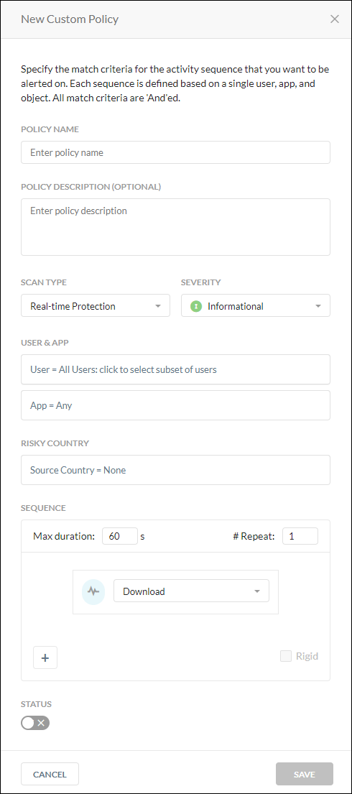
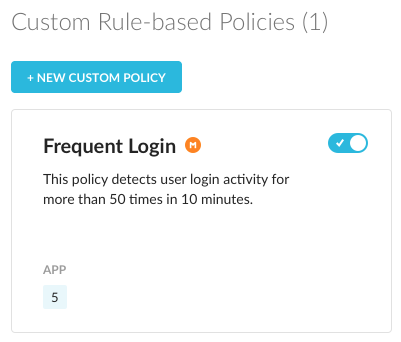

Rule-Based Policies
To access the Rule-Based policy page, go to Policies > Behavior Analytics > Rule-Based tab.
There are nine default Rule-Based policies:
Bulk Delete: Detect suspicious/harmful user activity. Monitor potential risky users for any malicious activity that would cause data loss.
Bulk Download: Detect anomalous download activity from applications/instances where corporate data is stored. Identifies suspicious activity indicative of risky insider activity.
Bulk Failed Log ins: Identify attempts to breach corporate user accounts.
Bulk Upload: Detect suspicious data movement to authorized or unsanctioned applications/sites. Identifies potential exposure of corporate data.
Proximity: Proximity Detector will detect login activities that are geographically distant that should mark as anomalies.
Rare Event: Detect user activity that is rarely observed e.g. user has never downloaded from a particular app in the past 90 days.
Risky Countries: Identify access/activity on applications/sites hosted in risky countries. Helps detect potential compromised or malware infected devices.
Shared Credentials: Detect unauthorized sharing of user credentials that may violate corporate security policies.
Note
The Shared Credentials severity is fixed at Medium.
Suspicious Data Movement: Detect accidental or intentional data exfiltration. Identifies movement of data from corporate sanctioned application instances to personal or non-corporate applications/sites.
Custom Rule-Based Policies
Click the dropdown to create a rule-based policy. You can create a new policy or create a policy from the template library.
New Policy From Template
The template library contains the following templates for the new Behavior Analytics custom rule-based policies for potential suspicious activity. You can change any option once you select a template. The right panel edit window opens to enable editing.
Download / Delete: Download and Delete, 20 repetitions in one hour on Box.
Share / Delete: Share and Delete, 10 repetitions in one hour on Dropbox.
Upload / Share: Upload and Share, 10 repetitions in one hour on Google Drive.
Policies are defined using a set of variables. These variables define the criteria for detecting policy violations. Specify the match criteria for the activity sequence that you want to be alerted on. Each sequence is defined based on a single user, app, and object. All match criteria are 'And'ed.
To create a new custom policy:
On the Rule-Based Policies page, select the > New. The New Custom Policy right panel window opens.
Type a name for the new policy.
Optionally, type a policy description.
Select a Scan Type, either Real-time Protection or API-enabled Protection. Real-time Protection will monitor all Inline activities including Client, Reverse Proxy, GRE, and Forward Proxy. API Protection monitors all Introspection traffic which is captured by the APIs.
Select a severity for this new policy.

Note
The Shared Credentials severity is fixed at Medium.
Define the policy for apps or app instance. Based on your Access Method selection, the list will dynamically generate the available choices for apps or app instance.

OR

Select the Sequence of activities that will trigger the policy. You cannot have more than four activities listed in the sequence and actions cannot be the same.

Max duration time cannot exceed 3600 seconds. This is the max duration of time for the sequence of activities that will trigger the policy.
Number of times the activity was repeated. The number must be greater than zero.
Add an activity. Your choices may include the following or a subset based on your Access Method selection:

Select the Rigid text box if you want to enforce the order of activities. Rigid means that the activities must occur in the order specified to raise a detection. If not selected, the activities can occur in any order.
Enable Status to activate the policy.
Click Save to create the new policy. The policy name appears in the Rule-Based tab under the Custom Rule-Based Policies section.
